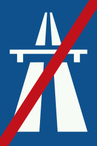
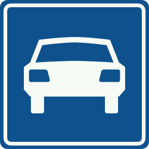
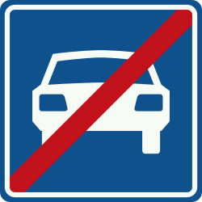
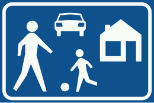
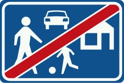
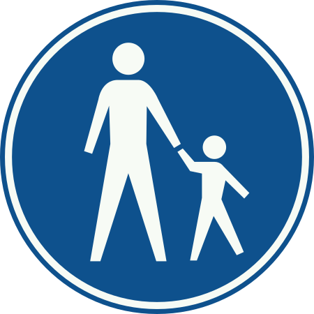
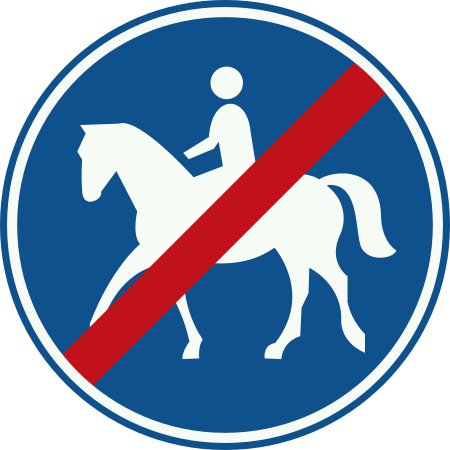
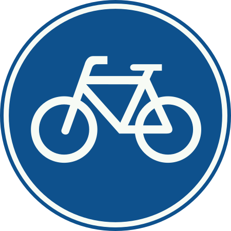
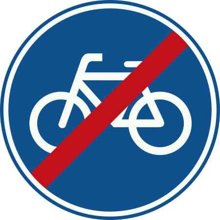
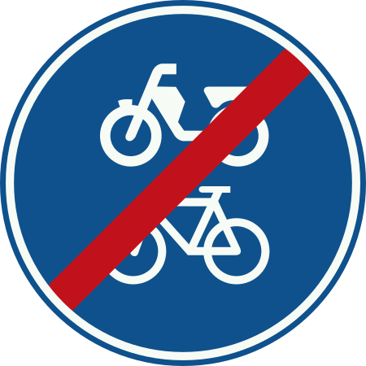

Autosnelweg
Je rijdt op een autosnelweg (snelweg).
De maximumsnelheid is 130 km/u, tenzij anders aangegeven.
Je rijdt op een autosnelweg (snelweg).
De maximumsnelheid is 130 km/u, tenzij anders aangegeven.
Hier stopt de autosnelweg.
De verkeersregels en snelheidslimiet voor autosnelwegen gelden niet meer.

Je rijdt op een autoweg.
De maximumsnelheid is 100 km/u, tenzij anders staat aangegeven.

Hier stopt de autoweg.
De regels en snelheidslimieten van een autoweg gelden niet meer.

Je rijdt een erf binnen (woongebied).
Je moet stapvoets rijden (ongeveer 15 km/u) en extra opletten op voetgangers en spelende kinderen.
Binnen een erf gelden de gewone voorrangsregels.

Hier stopt de woonzone (erf). De speciale regels (zoals 15 km/u) gelden niet meer.

Een voetpad is uitsluitend bedoeld voor voetgangers en gehandicaptenvoertuigen. Andere voertuigen (zoals fietsen of scooters) mogen hier niet rijden.


Dit bord geeft aan dat er een verplicht fietspad is. Fietsers en snorfietsers moeten van dit pad gebruikmaken.



Een onverplicht fietspad mag gebruikt worden door:
Hier stopt het onverplicht fietspad.